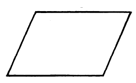
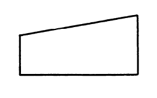
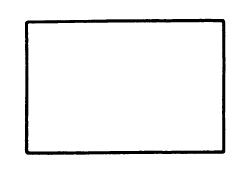
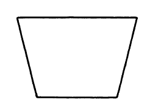
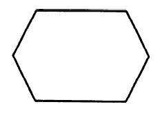
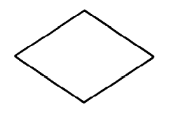
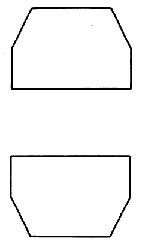
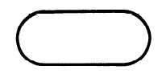
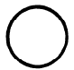

Como diseñar diagramas de flujo
Los diagramas de flujo sirven para representar de manera visual qué operaciones o secuencias se deben efectuar para resolver un problema computacional antes de codificar el programa.Se busco desarrollar un prototipo de una plataforma web el cual permite la elaboración de diagramas de flujo utilizando la simbología del estándar de la ISO/ANSI 5807. Para ello a continuación se visualiza un guia de uso de la simboligía mencionada.
Datos
Este símbolo se encarga únicamente de representar datos.
Entrada manual
Representa la información que sera ingresada de manualmente, por ejemplo, por teclado, botones, etc.
Proceso
El símbolo representa cualquier tipo de función de procesos, por ejemplo, la ejecución de una operación definida o un grupo de operaciones.
Operación manual
Representa cualquier proceso realizado por un humano.
Preparación
Este símbolo representa la modificación de una instrucción o grupo de instrucciones, en orden de afectar la siguientes actividades, por ejemplo, un selector.
Decisión
Representa la decisión o cambio de tipo de la función, es decir, solo entrará hacia la posición activada, dejando de lado el resto.
Ciclos
Esta dividido en dos símbolos, el inicio y final del ciclo.
Terminador
Representa el inicio o final dentro del flujo del programa.
Conector
Representa la salida o entrada de algún otro diagrama.
